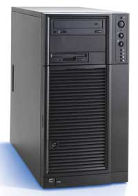
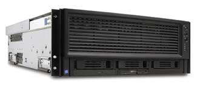
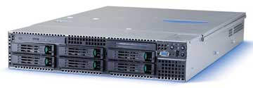
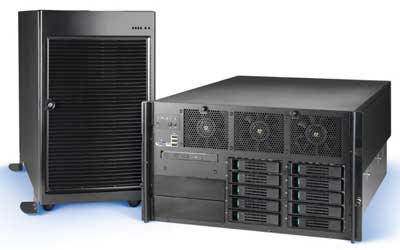

Мы предлагаем вниманию читателей обзор серверной продуктовой линейки компании R-Style Computers, включающий в себя актуальные для первой половины 2006 г. модели трех основных форм-факторов: напольные серверы, системы для монтажа в стойку и универсальные серверы. Обзор подготовлен по материалам, предоставленным компанией, и содержит основные сведения о технических характеристиках систем и их целевом назначении.
Серверы напольного исполнения
R-Style Marshall eNP 163
Сервер eNP 163, с которого начинается наш обзор, - младшая модель не только в семействе систем напольного исполнения, но и во всей продуктовой серверной линейке R-Style Computers. Она представляет собой недорогое и вместе с тем достаточно мощное решение для таких типовых задач, как организация файловых сервисов или сервисов печати. В модели eNP 163 инновационные технологии для обеспечения эффективной работы ресурсоемких приложений сочетаются с гибкостью конфигурирования, необходимой растущим компаниям. На эту модель имеет смысл обратить внимание, если требуется сервер начального уровня.
Модель eNP 163 построена на базе единственного процессора Pentium 4 с 800-МГц системной шиной и 2-Мбайт кэшем второго уровня и набора системных микросхем Intel E7221. В системе используется оперативная память стандарта PC2-3200 DDR2, максимальный объем которой может составлять 4 Гбайт. Для установки модулей памяти предусмотрено четыре разъема.
В сервер интегрирован 10/100/1000-Гбит/с Ethernet-адаптер и четырехпортовый дисковый контроллер Serial ATA с поддержкой RAID-массивов уровней 0 и 1. Предусмотрены также различные разъемы для установки карт расширения. Подробнее характеристики модели eNP 163 приведены в табл. 1.
R-Style Marshall eNP 164
В первой половине 2006 г. на рынке должна появиться модель eNP 164, представляющая собой технологическое обновление предыдущей системы. Она нацелена на решение все тех же задач, что и eNP 163, и адресована соответственно той же целевой аудитории.
К наиболее примечательным особенностям модели eNP 164 можно отнести новые процессоры Pentium 4 с 1066-МГц системной шиной и новый же набор системных микросхем Intel E7230, обеспечивающий поддержку до 8 Гбайт оперативной памяти стандартов PC2-3200, PC2-4200 или PC2-5300 DDR2. В остальном eNP 164 практически полностью повторяет модель eNP 163.
Более подробные данные о характеристиках модели eNP 164 можно найти в табл. 1.
|  | Сервер семейства R-Style Marshall в напольном исполнении.
|
R-Style Marshall NP 281
Модель NP 281, нацеленная на активно растущие компании, обеспечивает высокий уровень производительности и позволяет создавать недорогие решения для самого широкого спектра применений - сервер печати, файловый сервер, сервер защиты периметра сети, сервер БД отдела, сервер электронной почты и т. д. Для тех заказчиков, которым нужен надежный и производительный сервер и которые уже переросли возможности моделей начального уровня, NP 281 станет хорошим вложением средств - примененные в этой модели технологии увеличивают надежность, упрощают контроль и обслуживание систем, а также позволяют снизить стоимость управления и поддержки серверного парка предприятия.
Модель NP 281 построена на базе набора системных микросхем Intel E7525 и процессоров семейства Xeon DP с 800-МГц системной шиной и 2-Мбайт кэш-памятью второго уровня; соответственно она может содержать один или два процессора. В системе используется оперативная память стандарта PC-2100 или PC-2700 DDR с коррекцией ошибок методом ECC, доступ к которой может быть организован в двухканальном режиме. Максимальный объем ОЗУ посредством четырех разъемов доводится до 8 Гбайт.
В NP 281 встроен гигабитный Ethernet-адаптер и дисковый контроллер Serial ATA на два канала с поддержкой RAID-массивов уровней 0 и 1.
Более подробная информация о характеристиках NP 281 приведена в табл. 1.
R-Style Marshall NP 282
Модель NP 282 призвана удовлетворить требования растущих компаний и рабочих групп, которым необходимо серверное решение, сочетающее в себе производительность, инновации, качество и низкую стоимость. Она нацелена на заказчиков, стремящихся активно работать в условиях постоянно растущей конкуренции. Сервер NP 282 обеспечивает высокий уровень производительности и позволяет создавать недорогие решения для широкого спектра применений - от тривиальных систем печати до сложных и ресурсоемких серверов БД.
Сервер может содержать один или два процессора Xeon DP с частотой системной шины 800 МГц и кэш-памятью второго уровня объемом 2 Мбайт. Он базируется на инновационном наборе системных микросхем Intel E7320 и поддерживает до 8 Гбайт двухканальной памяти стандарта PC-2100 или PC-2700 DDR с корректирующими ECC-кодами (предусмотрены четыре DIMM-разъема).
Модель NP 282 содержит встроенный Ethernet-адаптер со скоростью передачи данных до 1 Гбит/с и двухканальный дисковый контроллер стандарта Serial ATA, обеспечивающий построение RAID-массивов уровней 0 и 1. Прочие технические данные модели NP 282 можно найти в табл. 1.
Стоит отметить, что сервер телематических служб NP 282 имеет зарегистрированную Федеральным агентством связи в установленном порядке Декларацию о соответствии.
Таблица 1. Серверы R-Style напольного исполнения
| eNP 163 | eNP 164 | NP 281 | NP 282 | |
| Процессор: | ||||
| Тип процессора |
Intel Pentium 4
|
Intel Xeon DP
|
||
| количество |
1
|
1 или 2
|
||
| частота шины, МГц | 800 | 800, 1066 | 800 | 800 |
| кэш-память второго уровня (L2), Мбайт |
до 2
|
|||
| НМС | Intel E7221 | Intel E7230 | Intel E7525 | Intel E7320 |
| Память: | ||||
| тип |
DDR2
|
DDR
|
||
| стандарт | PC2-3200 | PC2-3200, PC2-4200, PC2-5300 | PC-2100, PC-2700 | PC-2100, PC-2700 |
| число разъемов DIMM |
4
|
|||
| максимальный объем, Гбайт | 4 | 8 | 8 | 8 |
| Интегрированные контроллеры: | ||||
| видеоадаптер (видеопамять, Мбайт) | PCI (8) | PCI (16) | PCI (8) | PCI (8) |
| сетевой адаптер | 1 x 10/100/1000 Мбит/с | 2 x 10/100/1000 Мбит/с | 1 x 10/100/1000 Мбит/с | 1 x 10/100/1000 Мбит/с |
| флоппи-дисковод |
3,5 дюйма
|
|||
| дисковые контроллеры |
SATA
|
|||
| RAID | RAID 0,1 (SATA), 4 порта | RAID 0,1 (SATA), 4 порта | RAID 0,1 (SATA) | RAID 0,1 (SATA) |
| Система ввода-вывода: | ||||
| слоты расширения | 1 x PCI-E x8 2 x PCI-E x4 3 x PCI (33 МГц) |
1 x PCI-E x8 1 x Intel Adaptive Slot (PCI-E x8, PCI-X или PCI-riser) 1 x PCI-X (64 бит) 2 x PCI (33 МГц) |
1 x PCI-E x16 1 x PCI-E x4 2 x PCI (64 бит, 66 МГц) 2 x PCI (32 бит, 33 МГц) |
1 x PCI-E x4 2 x PCI (64 бит, 66 МГц) 2 x PCI (32 бит, 33 МГц) |
| порты | 2 х USB, 1 х COM, 2 х PS/2 | 2 х USB, 1 х COM, 2 х PS/2 | 2 х USB, 1 х COM, 2 х PS/2 | 2 х USB, 1 х COM, 2 х PS/2 |
| Отсеки для жестких дисков: | ||||
| фиксированные |
6
|
|||
| с горячей заменой |
6 (SATA, SCSI (опция))
|
|||
| Внешние отсеки |
2 x 5,25 дюйма, 1 x 3,5 дюйма
|
|||
| Оптические накопители |
CD, DVD, CD-RW, DVD-RW
|
|||
| Флоппи-дисковод |
3,5 дюйма
|
|||
| Система охлаждения (вентиляторы) |
2 x 120 мм, один в блоке питания
|
|||
| Система питания | 600 Вт с режимом коррекции выходного напряжения | 350 Вт с режимом коррекции выходного напряжения | 600 Вт с режимом коррекции выходного напряжения | 600 Вт с режимом коррекции выходного напряжения |
| Габариты (ВхШхГ), мм | 445x236x485 | 452х236х483 236х477х483 | 445x236x485 | 445x236x485 |
| Средства управления сервером |
Система Intel Server Management
|
|||
Серверы для монтажа в стойку
R-Style Marshall EP 272r
Модель EP 272r - система масштаба предприятия на базе процессоров Intel Itanium 2, представляющая новое поколение тонких серверов, предназначенных для работы с внешними дисковыми массивами и построения высокопроизводительных кластеров. Сервер максимально эффективен для поддержки критически важных бизнес-приложений в режиме 24x7 и демонстрирует высокую производительность в следующих прикладных областях: бизнес-аналитика, высокопроизводительные вычисления и интенсивная обработка данных (финансы, нефтегазовый сектор и т. п.), автоматизация проектирования, управление ресурсами предприятия.
В сервере высотой 2U можно разместить до двух процессоров Itanium 2 с 400-МГц системной шиной и интегрированной кэш-памятью третьего уровня объемом до 9 Мбайт. Базовый набор включает НМС Intel E8870, поддерживающий до 16 Гбайт оперативной памяти стандарта PC-2700 DDR. Для установки модулей памяти предусмотрено восемь DIMM-разъемов.
В EP 272r встроена пара 10/100/1000-Гбит/с Ethernet-адаптеров и двухканальный дисковый контроллер стандарта Ultra320 SCSI с поддержкой RAID-массивов уровня 1, позволяющий установить до двух SCSI-дисков с горячей заменой. Прочие характеристики модели EP 272r можно найти в табл. 2.
Сервер телематических служб EP 272r имеет зарегистрированную Федеральным агентством связи в установленном порядке Декларацию о соответствии.
R-Style Marshall EP 471r
Модель EP 471r, мощный сервер на базе процессоров Intel Itanium 2, предназначена для реализации проектов корпоративного уровня, научных приложений и технических расчетов любой степени сложности, ресурсоемких баз данных, требующих непрерывной работы, высокой производительности и вычислительной мощности. Целевая потребительская аудитория и круг областей применения - те же, что и у предыдущей модели.
|  | Модель R-Style Marshall EP 471r.
|
В сервер высотой 4U можно установить до четырех процессоров Itanium 2 с частотой системной шины 400 МГц и интегрированным кэшем третьего уровня объемом до 9 Мбайт. Набор системных микросхем Intel E8870 посредством восьми DIMM-разъемов обеспечивает поддержку до 32 Гбайт оперативной памяти стандарта PC-2700 DDR.
В EP 471r интегрирован гигабитный Ethernet-адаптер и двухканальный дисковый контроллер стандарта Ultra320 SCSI, допускающий установку до трех SCSI-дисков с горячей заменой. Дополнительная информация о технических характеристиках модели EP 471r приведена в табл. 2.
Модель EP 471r как сервер телематических служб имеет зарегистрированную Федеральным агентством связи в установленном порядке Декларацию о соответствии.
R-Style Marshall NP 281r
Модель NP 281r представляет собой сервер масштаба рабочей группы. Она обеспечивает необходимый уровень вычислительной мощности и масштабируемости, достаточный для решения задач отделения компании, функциональную надежность, простоту интеграции и широкие возможности управления для решений с высокой плотностью монтажа, а также простоту управления и технического обслуживания. Модель NP 281r - гибкое решение для построения высокопроизводительных систем и кластеров, для работы в качестве средства поддержки Интернет-сервисов, обслуживания баз данных подразделений, центров хранения данных и других приложений, интенсивно использующих вычислительные мощности.
Серверная система высотой 1U построена на базе специализированного набора системных микросхем Intel E7520; высокая производительность вычислений достигается за счет двух процессоров Xeon DP с частотой системной шины 800 МГц и кэш-памятью второго уровня объемом 2 Мбайт. Подсистема памяти обеспечивает работу шести двухканальных разъемов для регистровых DIMM-модулей с кодом коррекции ошибок ECC. Поддерживаются модули памяти как стандарта PC-2100 или PC-2700 DDR, так и стандарта PC2-3200 DDR2. Максимальный объем ОЗУ составляет 16 Гбайт.
В модели NP 281r имеются два интегрированных серверных сетевых Ethernet-адаптера Intel PRO MT со скоростью передачи данных до 1 Гбит/с, а также дисковый контроллер стандарта Serial ATA с поддержкой RAID-массивов уровней 0 и 1 и функции горячей замены жесткого диска. Опционально доступен двухканальный дисковый контроллер стандарта Ultra320 SCSI, обеспечивающий установку SCSI-дисков с горячей заменой и поддержку RAID-массивов уровней 0 и 1. Более подробную информацию о характеристиках сервера можно найти в табл. 2.
Выступая в качестве сервера телематических служб, модель NP 281r имеет зарегистрированную в установленном порядке Федеральным агентством связи Декларацию о соответствии.
R-Style Marshall NP 282r
Модель NP 282r представляет собой компактную систему, которую можно использовать в качестве сервера совместного доступа, сервера приложений, сервера баз данных начального уровня, а также для построения кластерных конфигураций. Сервер предоставляет богатый выбор возможностей конфигурирования и потому отлично подходит для построения универсальных систем с высокой плотностью монтажа.
|  | Модель R-Style Marshall EP 282r.
|
Модель NP 282r, выполненная в корпусе высотой 2U, использует до двух процессоров Xeon DP с частотой системной шины 800 МГц и кэш-памятью второго уровня объемом 2 Мбайт. В качестве базы выступает набор микросхем Intel E7520, обеспечивающий работу шести двухканальных разъемов для регистровых модулей стандарта PC-2100 DDR, PC-2700 DDR или PC2-3200 DDR2 с кодом коррекции ошибок ECC. Максимальный поддерживаемый объем ОЗУ - 16 Гбайт.
Сервер оснащен двумя интегрированными сетевыми Ethernet-адаптерами со скоростью передачи данных до 1 Гбит/с и дисковым контроллером Serial ATA с поддержкой RAID-массивов уровней 0 и 1 и функции горячей замены устройств. В качестве приобретаемой отдельно опции доступен двухканальный дисковый контроллер стандарта Ultra320 SCSI, обеспечивающий горячую замену жестких дисков и поддержку RAID-массивов уровней 0 и 1.
Подробнее особенности модели NP 282r описаны в табл. 2.
Сервер телематических служб NP 282r имеет зарегистрированную Федеральным агентством связи в установленном порядке Декларацию о соответствии.
R-Style Marshall NP 283r
Модель NP 283r оптимизирована для высокой плотности монтажа при построении систем параллельных вычислений начального уровня и коммуникационных решений и представляет собой законченное, хорошо оптимизированное решение для компаний, чья деятельность связана с отработкой задач подобного типа.
Компактный сервер выполнен в корпусе высотой 1U. Он построен на базе набора системных микросхем Intel E7320 и одного либо двух процессоров Xeon DP с 800-МГц системной шиной и 2-Мбайт кэшем второго уровня. Подсистема памяти посредством шести DIMM-разъемов обеспечивает работу до 16 Гбайт ОЗУ стандарта PC-2100 или PC-2700 DDR в максимуме.
В модели NP 283r предусмотрена пара встроенных гигабитных Ethernet-адаптеров и дисковый контроллер стандарта Serial ATA с поддержкой RAID-массивов уровней 0 и 1 и функции горячей замены жестких дисков.
Подробные технические спецификации модели NP 283r приведены в табл. 2.
R-Style Marshall NP 452r/491r
Модель NP 452r/491r - новый 64-разрядный сервер, наилучшим образом приспособленный для работы современных бизнес-приложений, систем электронной торговли и баз данных масштаба предприятия.
Сервер для монтажа в стойку, имеющий высоту 4U, комплектуется процессорами Xeon MP, общим числом до четырех, с 667-МГц системной шиной и полной поддержкой 64-разрядного расширения архитектуры х86 - технологии EM64T. В зависимости от конкретной комплектации это могут быть процессоры с ядром Cranford и 1-Мбайт интегрированным кэшем второго уровня или с ядром Potomac и 4/8-Мбайт интегрированным кэшем третьего уровня. Базовый набор системных микросхем Intel E8500, известный под кодовым именем Twin Castle, позволяет устанавливать регистровую память с ECC-коррекцией ошибок стандарта PC2-3200 DDR2. Совокупный объем памяти, размещаемой в 16 DIMM-разъемах (четыре корзины по четыре гнезда), может составлять 32 Гбайт максимум. Память сервера может быть организована в RAID-массив с поддержкой режима горячей замены вышедших из строя модулей, что значительно повышает отказоустойчивость системы.
В серверах NP 452r/491r присутствуют два встроенных Ethernet-контроллера со скоростью передачи данных 10/100/1000 Мбит/с и дисковый контроллер стандарта Serial ATA, интегрированный в набор микросхем. Опционально доступен двухканальный дисковый контроллер стандарта Ultra320 SCSI, обеспечивающий установку до пяти жестких дисков, а также функции их горячей замены и поддержку RAID-массивов уровней 0, 1, 3 и 5.
Подробнее технические характеристики сервера NP 452r/491r можно найти в табл. 2.
Отметим, что модель NP 491r представляет собой сервер телематических служб, имеющий зарегистрированную Федеральным агентством связи в установленном порядке Декларацию о соответствии.
Таблица 2. Серверы R-Style для монтажа в стойку
| EP 272r | EP 471r | NP 281r | NP 282r | NP 283r | NP 452r/491r | |
| Процессор: | ||||||
| тип процессора |
Intel Itanium 2
|
Intel Xeon DP
|
Intel Xeon MP (Cranford & Potomac) | |||
| количество | до 2 | до 4 |
до 2
|
до 4 | ||
| частота шины, МГц |
400
|
800
|
667 | |||
| кэш-память 2-го уровня (L2), Мбайт |
256 Кбайт
|
до 2
|
1 | |||
| кэш-память 3-го уровня (L3), Мбайт |
до 9
|
- | - | - | до 8 (Potomac) | |
| Набор микросхем |
Intel E8870
|
Intel E7520 | Intel E7520 | Intel E7320 | Intel E8500 | |
| Память: | ||||||
| тип |
DDR
|
DDR или DDR2 (опция) | DDR или DDR2 (опция) | DDR | DDR2 | |
| стандарт |
PC-2100
|
PC-2100, PC-2700 или PC2-3200 (опция) | PC-2100, PC-2700 или PC2-3200 (опция) | PC-2100, PC-2700 | PC2-3200 | |
| число разъемов DIMM | 8 | 16 |
6
|
16 | ||
| максимальный объем, Гбайт | 16 | 32 |
16
|
32 | ||
| Интегрированные контроллеры: | ||||||
| Видеоадаптер (видеопамять, Мбайт) |
PCI (8)
|
PCI (8)
|
PCI (16) | |||
| сетевой адаптер | 2 x 10/100/1000 Мбит/с | 1 x 10/100/1000 Мбит/с |
2 x 10/100/1000 Мбит/с
|
2 x 10/100/1000 Мбит/с | ||
| флоппи-дисковод |
3,5 дюйма
|
|||||
| дисковые контроллеры |
два канала Ultra320 SCSI
|
SATA, два канала Ultra320 SCSI (опция)
|
SATA | два канала Ultra320 SCSI | ||
| RAID | RAID 1 (SCSI) | - |
RAID 0,1 (SATA, SCSI (опция))
|
RAID 0,1 (SATA) | RAID 0,1,3,5 (SCSI опция) | |
| Система ввода-вывода: | ||||||
| слоты расширения | 1 x PCI-X (64 бит, 133 МГц) 2 x PCI-X (64 бит, 100 МГц) |
3 x PCI-X с горячей заменой (64 бит, 133 МГц) 5 x PCI-X с горячей заменой (64 бит, 100 МГц) |
1 x PCI-X низкопрофильный 1 x PCI-X или 1 х PCI-E x8 полноразмерный |
3 x PCI-X низкопрофильные 3 x PCI-X пассивные или 3 х PCI-X активные 2 x PCI-E x4 полноразмерный 1 х PCI-X полноразмерный |
1 x PCI-E x4 или PCI-X (66 МГц) 1 x PCI-X низкопрофильный (66 МГц) |
1 х PCI Express x8 с горячей заменой 3 х PCI Express x4 с горячей заменой 1 х PCI-X с горячей заменой (133 МГц) 2 х PCI-X (100 МГц) |
| порты | 4 х USB,1 х COM (RJ-45) | 4 х USB, 1х COM (RJ-45) | 2 х USB (на задней панели), 1 х USB (на передней панели) или 2 х USB (при установке внешней панели управления), 1 х COM (RJ-45), 2 х PS/2 | 2 х USB (на задней панели), 1 х USB (на передней панели) или 2 х USB (при установке внешней панели управления), 1 х COM (RJ-45), 3 х PS/2 | 2 х USB (на задней панели), 1 х COM (RJ-45), 2 х PS/2 | 3 х USB (на передней панели), 2 х USB (на задней панели), 1 х COM |
| Отсеки для жестких дисков: | ||||||
| фиксированные |
-
|
3
|
- | |||
| с горячей заменой | 2 (SCSI) | 3 (SCSI) | 3 (SATA, SCSI) (опция) | 6 (SATA, SCSI) (опция) | 3 (SATA) (опция) | 5 (SCSI) |
| Внешние отсеки |
-
|
1 (тонкопрофильный)
|
1 | |||
| Оптические накопители | DVD/CD-RW | DVD |
CD, DVD (тонкопрофильный)
|
DVD | ||
| Флоппи-дисководи | - | - |
3,5 дюйма (тонкопрофильный)
|
- | ||
| Система охлаждения (вентиляторы) |
4 (2 основных + 2 резервных) с горячей заменой
|
5 | 4 | 5 | 4 (2 основных + 2 резервных) с горячей заменой | |
|
2 вентилятора охлаждения процессоров
|
2 вентилятора в блоке питания
|
- | ||||
| Система питания | 3 x 350 Вт (2 основных + 1 резервный) с режимом коррекции выходного напряжения | 2 x 1200 Вт (1 основной + 1 резервный) с режимом коррекции выходного напряжения | 500 Вт с режимом коррекции выходного напряжения | 2 x 700 Вт с режимом коррекции выходного напряжения | 450 Вт с режимом коррекции выходного напряжения | 2 х 1470 Вт (1 основной + 1 резервный) с режимом коррекции выходного напряжения |
| Габариты (ВхШхГ), мм | 87x449x747 | 175x445x711 | 43x430x672 | 87,5x430x672 | 43,3x430x672 | 173х447х706 |
| Высота в стойке | 2U | 4U | 1U | 2U | 1U | 4U |
| Средства управления сервером | Система Intel Server Management | Система Intel Server Management | Система Intel Server Management; Intel Management Module (Professional Edition или Advanced Edition) (опция); Intel Local Control Panel (опция) | Система Intel Server Management | Система Intel Server Management; Intel Management Module Professional Edition; Intel Local Control Panel (опция); Intel Management Module Advanced Edition (опция) | |
| Поддерживаемые стандарты | IPMI 1.5, SNMP | IPMI 1.5, SNMP | IPMI, DMI, CIM, SNMP, ICMB | IPMI, DMI, CIM, SNMP, ICMB | IPMI, DMI, CIM, SNMP | IPMI, DMI, CIM, SNMP, ICMB |
Универсальные серверы
R-Style Marshall NP 283
Модель NP 283 - недорогой сервер широкого спектра применений для растущих компаний и рабочих групп, заинтересованных в решении, в котором сочетались бы производительность и инновации, качество и надежность, низкая стоимость приобретения, владения, управления и поддержки, а также гибкость конфигурирования и простота управления и обслуживания.
Сервер может содержать до двух процессоров Xeon DP с частотой системной шины 800 МГц и кэш-памятью второго уровня объемом 2 Мбайт. Система построена на базе набора микросхем Intel E7320 и поддерживает (посредством четырех двухканальных DIMM-разъемов) до 8 Гбайт оперативной памяти стандарта PC-2100 или PC-2700 DDR с корректирующими ECC-кодами.
Модель NP 283 содержит встроенный Ethernet-адаптер со скоростью передачи данных до 1 Гбит/с и двухканальный дисковый контроллер стандарта Serial ATA, обеспечивающий построение RAID-массивов уровней 0 и 1. При установке в 19-дюйм стойку сервер занимает высоту 5U.
Прочие технические данные модели NP 283 можно найти в табл. 3.
R-Style Marshall NP 284
Сервер NP 284 представляет собой универсальное высокопроизводительное адаптируемое решение для поддержания работоспособности важнейших деловых ИТ-систем предприятия, в которых эта модель выступает в качестве сервера баз данных уровня отделения компании, сервера файловых и почтовых служб.
Сервер NP 284 предназначается для работы в условиях постоянной готовности - он спроектирован с учетом требований к резервированию системы питания и охлаждения, что позволяет оптимизировать производительность и минимизировать потребности в обслуживании.
Сервер построен на базе набора микросхем Intel E7520 и поддерживает установку двух процессоров Xeon DP с частотой системной шины 800 МГц и кэш-памятью второго уровня 2 Мбайт. Оперативная память стандарта PC-2100 или PC-2700 DDR суммарно может составлять 12 Гбайт и иметь двухканальную организацию доступа и средства резервирования. Для установки DIMM-модулей предусмотрено шесть разъемов.
Модель NP 284 включает два интегрированных гигабитных сетевых контроллера Ethernet, дисковый контроллер стандарта Serial ATA с поддержкой RAID-массивов уровней 0 и 1, интегрированный в набор микросхем, и поставляемый опционально двухканальный контроллер Ultra320 SCSI, который также имеет встроенные средства для организации дисковых массивов RAID уровней 0 и 1.
Модель NP 284 выпускается в исполнении "пьедестал", а также в виде комплекта для монтажа в 19-дюйм стойку, в последнем случае высота занимаемого пространства равняется 5U. Подробная техническая информация о модели NP 284 представлена в табл. 3.
Сервер телематических служб NP 284 имеет зарегистрированную Федеральным агентством связи в установленном порядке Декларацию о соответствии.
R-Style Marshall NP 452/491
Модель NP 452/491 - универсальный сервер, который выпускается как в стоечном (высотой 6U), так и в напольном исполнении. По характеру решаемых задач и целевой аудитории данная модель полностью совпадает с моделью NP 452r/491r, рассмотренной в предыдущем разделе.
|  | Универсальный сервер R-Style Marshall NP 452.
|
Серверы комплектуются новейшими процессорами Xeon MP с 667-МГц системной шиной, полностью поддерживающими технологию EM64T. Общее количество установленных в системе процессоров может доходить до четырех. В зависимости от ситуации при комплектации серверов используются процессоры с ядром Cranford и 1-Мбайт интегрированным кэшем второго уровня или с ядром Potomac и 4/8-Мбайт интегрированным кэшем третьего уровня. Базовый набор системных микросхем Intel E8500, поддерживающий регистровую память с ECC-коррекцией ошибок стандарта PC2-3200 DDR2, позволяет доводить совокупный объем памяти, размещаемой в 16 DIMM-разъемах (четыре корзины по четыре гнезда), до 64 Гбайт. Для повышения отказоустойчивости системы память системы может быть организована в RAID-массив с поддержкой режима горячей замены вышедших из строя модулей.
В серверах NP 452/491 имеется пара встроенных Ethernet-контроллеров со скоростью передачи данных 10/100/1000 Мбит/с и интегрированный в набор микросхем дисковый контроллер стандарта Serial ATA. Опционально поставляется двухканальный дисковый контроллер стандарта Ultra320 SCSI, обеспечивающий установку до 10 жестких дисков, а также функции горячей замены вышедших из строя накопителей и поддержку RAID-массивов уровней 0, 1, 3 и 5.
Детальные технические характеристики модели NP 452/491 приведены в табл. 3.
Модель NP 491 представляет собой сервер телематических служб, имеющий зарегистрированную Федеральным агентством связи в установленном порядке Декларацию о соответствии.
Таблица 3. Универсальные серверы R-Style
| NP 283 | NP 284 | NP 452 / 491 | |
| Процессор: | |||
| тип процессора |
Intel Xeon DP
|
Intel Xeon MP (Cranford & Potomac) | |
| количество |
до 2
|
до 4 | |
| частота шины, МГц |
800
|
667 | |
| кэш-память 2-го уровня (L2), Мбайт |
до 2
|
до 1 | |
| кэш-память 3-го уровня (L3), Мбайт |
-
|
до 8 (Potomac) | |
| Набор микросхем | Intel E7320 | Intel E7520 | Intel E8500 |
| Память: | |||
| тип |
DDR
|
DDR2 | |
| стандарт |
PC-2100, PC-2700
|
PC2-3200 | |
| число разъемов DIMM | 4 | 6 | 16 |
| максимальный объем, Гбайт | 8 | 12 | 64 |
| Интегрированные контроллеры: | |||
| Видеоадаптер (видеопамять, Мбайт) |
PCI (8)
|
PCI (16) | |
| сетевой адаптер | 1 x 10/100/1000 Мбит/с | 2 x 10/100/1000 Мбит/с | 2 x 10/100/1000 Мбит/с |
| флоппи-дисковод |
3,5 дюйма
|
||
| дисковые контроллеры | SATA | SATA, два канала Ultra320 SCSI (опция) | два канала Ultra320 SCSI |
| RAID | RAID 0,1 (SATA) | RAID 0,1 (SATA, SCSI опция) | RAID 0,1,3,5 (SCSI, опция) |
| Система ввода-вывода: | |||
| слоты расширения | 1 x PCI-E x4 2 x PCI (64 бит, 66 МГц) 2 x PCI (32 бит, 33 МГц) |
1 x PCI-E x4 1 x PCI-E x8 1 x PCI (64 бит, 133 МГц) 2 x PCI (64 бит, 100 МГц) 1 x PCI (32 бит, 33 МГц) |
1 х PCI Express x8 с горячей заменой 3 х PCI Express x4 с горячей заменой 1 х PCI-X с горячей заменой (133 МГц) 2 х PCI-X (100 МГц) |
| порты | 2 х USB, 1 х COM, 2 х PS/2 | 3 х USB, 1 х COM, 2 х PS/2 | 3 х USB (на передней панели), 2 х USB (на задней панели), 1 х COM |
| Отсеки для жестких дисков: | |||
| фиксированные |
6, 4 (опция)
|
- | |
| с горячей заменой |
4 (SCSI) и/или 6 (SATA, SCSI) (опция)
|
10 (SCSI) | |
| Внешние отсеки |
3 x 5,25 дюйма
|
2 x 5,25 дюйма | |
| Оптические накопители |
CD, DVD, CD-RW, DVD-RW
|
DVD | |
| Флоппи-дисковод |
3,5 дюйма
|
- | |
| Система охлаждения (вентиляторы) |
1 x 120 мм, 1 x 92 мм, 1 х 80 мм в блоке питания
|
6 (5 основных + 1 резервный) с горячей заменой | |
| Система питания | 600 Вт с режимом коррекции выходного напряжения | 2 x 730 Вт с режимом коррекции выходного напряжения | 3 х 1570 Вт с режимом коррекции выходного напряжения |
| Габариты (ВхШхГ), мм |
429х218х709 (напольный); 218x424x696 (стойка)
|
262х447х706 (напольный/стойка) | |
| Высота в стойке |
5U
|
6U | |
| Средства управления сервером | Система Intel Server Management | Система Intel Server Management; Intel Management Module (Professional Edition или Advanced Edition) (опция); Intel Local Control Panel (опция) | Система Intel Server Management; Intel Management Module Professional Edition; Intel Management Module Advanced Edition (опция); Intel Local Control Panel (опция) |
| Поддерживаемые стандарты | - | IPMI, DMI, CIM, SNMP, ICMB | IPMI, DMI, CIM, SNMP, ICMB |